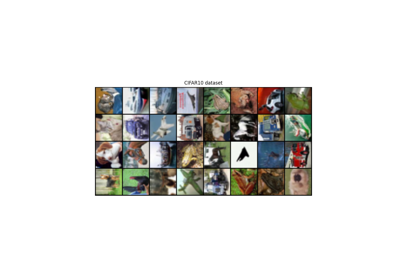

Binary
- class colibri.regularizers.Binary(parameter=10, min_v=0, max_v=1)[source]
Bases:
ModuleBinary Regularization for Coded Aperture Design.
Code adapted from Bacca, Jorge, Tatiana Gelvez-Barrera, and Henry Arguello. “Deep coded aperture design: An end-to-end approach for computational imaging tasks.” IEEE Transactions on Computational Imaging 7 (2021): 1148-1160. The regularizer computes:
\[\begin{equation*} R(\learnedOptics) = \mu\sum_{i=1}^{n} (\learnedOptics_i - \text{min_v})^2(\learnedOptics_i - \text{max_v})^2 \end{equation*}\]where \(\mu\) is the regularization parameter and \(\text{min_v}\) and \(\text{max_v}\) are the minimum and maximum values for the weights, respectively.
- Parameters:
parameter (float) – Regularization parameter.
min_v (float) – Minimum value for weight clipping.
max_v (float) – Maximum value for weight clipping.
Examples using Binary:

Demo Colibri.